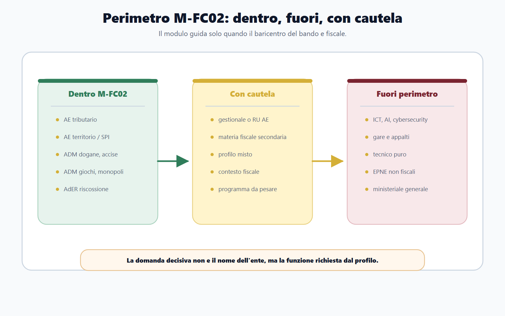
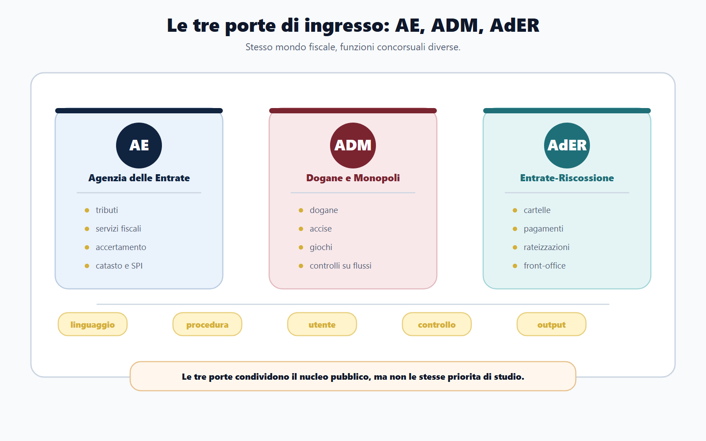
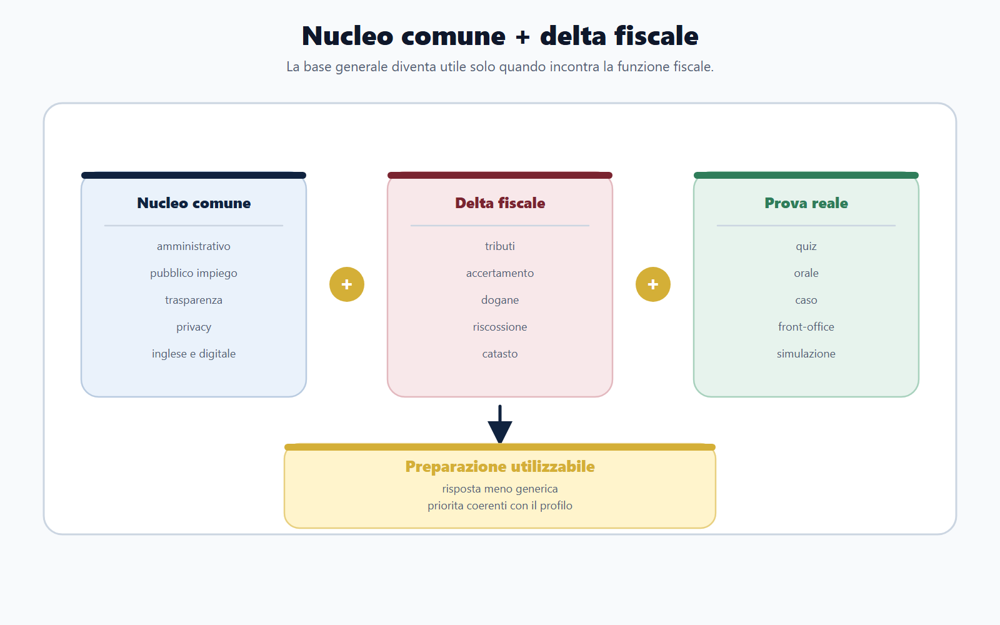
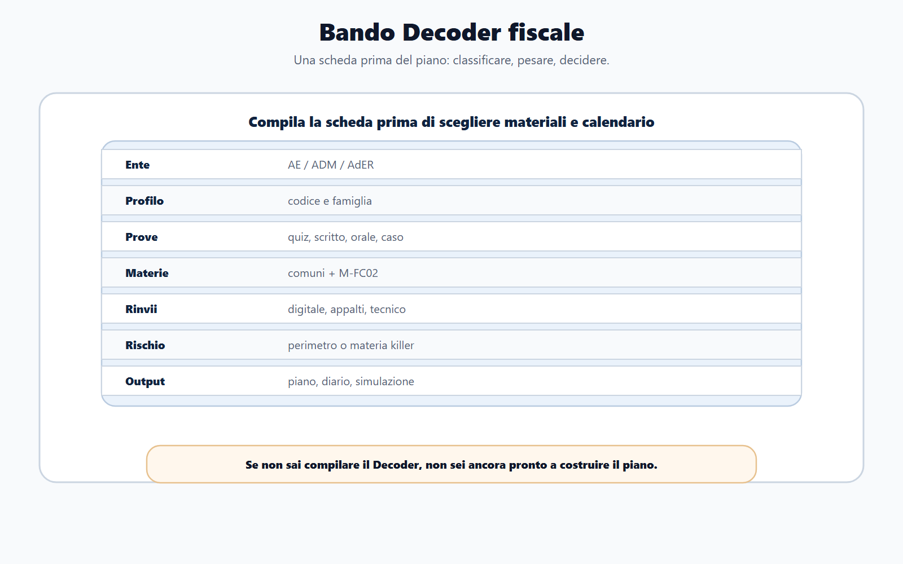

VOL-03 · Capitolo 16
M-FC02
Mappa delle Agenzie fiscali
e dei profili concorsuali
Un concorso nelle Agenzie fiscali non è un concorso amministrativo generico con qualche domanda in più di diritto tributario. Ente, profilo e programma indicano una funzione precisa: entrate, servizi fiscali, controllo, catasto, dogane, accise, giochi, monopoli o riscossione. Se non la riconosci subito, studi molto, ma nel punto sbagliato.
01 · Il problema in prova
Il nome dell’ente non basta
La presenza di diritto amministrativo, pubblico impiego, trasparenza, inglese e informatica può far pensare a un impianto identico ai concorsi ministeriali. Nei profili fiscali il nucleo comune sostiene la preparazione, non la sostituisce. Il vantaggio si gioca sul delta fiscale: materie e attività che collegano l’amministrazione al contribuente, all’operatore, al debitore, all’immobile, alla merce, al tributo, all’accertamento e alla riscossione.
Che cos’è M-FC02
È il modulo specialistico per i concorsi con baricentro fiscale. Riunisce tre porte di studio: Agenzia delle Entrate, Agenzia delle Dogane e dei Monopoli, Agenzia delle Entrate-Riscossione. La tripartizione orienta il piano; non rende i tre soggetti istituzionalmente identici.
A che serve in prova
A decidere se il bando è davvero fiscale, quale sottopercorso attivare e quali materie presidiare per prime. Senza questa mappa si accumulano materiali; con la mappa si costruisce una preparazione selettiva.
Nucleo comune più delta fiscale: preparazione utilizzabile.
Senza nucleo comune la risposta è fragile. Senza delta fiscale è generica. Un profilo tributario AE, un assistente ADM e un addetto alla riscossione condividono categorie amministrative, non la stessa funzione.
02 · BANDO
Cinque decisioni su questo capitolo
Il metodo non parte dal manuale. Parte dal bando e ricostruisce il manuale necessario.
| Che cosa osservi | Se la salti | |
|---|---|---|
| B — Bando | Ente, profilo, codice, prove, materie, sede, requisiti. | Classifichi il concorso dal nome dell’ente. |
| A — Aree | Peso delle materie comuni, del delta fiscale e dei rinvii. | Tratti tutto come amministrativo generale. |
| N — Nuclei | Tributi, accertamento, adempimenti, riscossione, dogane, accise, giochi, catasto, pubblicità immobiliare. | Non sai quale sottopercorso attivare. |
| D — Diario | Errori di perimetro, lacune, domande-trappola. | Ripeti lo stesso piano per AE, ADM e AdER. |
| O — Output | Quiz, risposta argomentata, caso, orale o simulazione. | Studi senza allenare la prova reale. |
03 · Perimetro
Dentro, fuori, misto: il criterio è la funzione
M-FC02 copre i concorsi con centro di gravità fiscale. Il criterio decisivo non è solo il nome del profilo: è la funzione richiesta dal bando. Un concorso bandito da un’Agenzia fiscale può non essere M-FC02 se il centro è informatico, ingegneristico, appalti o gestione del personale.
| Domanda | Decisione |
|---|---|
| Ente AE, ADM o AdER e profilo fiscale? | M-FC02 come modulo principale. |
| Materie fiscali presenti ma secondarie? | M-FC02 come supporto, non come guida. |
| Centro ICT, appalti, tecnico o HR? | Altro modulo specialistico. |
| Ente non fiscale con tributario accessorio? | Tributario come materia, non come percorso. |
Il perimetro si decide sulla funzione concorsuale, non sull’etichetta dell’ente.

04 · Ordinamento
Stesso percorso, funzioni non intercambiabili
Il D.Lgs. 30 luglio 1999, n. 300 è il riferimento generale per il rapporto tra MEF e agenzie fiscali. Agenzia delle Entrate e ADM appartengono all’amministrazione finanziaria e esercitano funzioni diverse. AdER entra nel modulo per una ragione funzionale: presidia la riscossione nazionale, tratto finale del ciclo fiscale.
AE
Amministra entrate e servizi fiscali, oltre alle funzioni catastali e immobiliari richiamate dai bandi. Accertamento, adempimenti e territorio restano nel suo baricentro.
ADM
Presidia dogane, accise, giochi e monopoli. Il lessico è di flussi, merci, operatori e mercati regolati, non di tributario interno generico.
AdER
Opera nella riscossione e nel rapporto procedurale con il contribuente-debitore. Non coincide con l’Agenzia delle Entrate.
Prima si identifica il soggetto, poi la funzione, infine il procedimento. L’ordine evita formule come «l’ente controlla e riscuote i tributi», che sovrappongono fasi diverse.
05 · Tre porte
Tre ingressi, tre linguaggi
Il candidato che prepara ADM con lo schema AE sbaglia prospettiva. Chi prepara AdER come accertamento confonde le fasi. Ogni porta ha un nucleo proprio.

Agenzia delle Entrate, ADM e AdER: tre porte di studio, tre lessici operativi.
06 · Profili
Segnali da leggere nel bando
La tabella è una prima classificazione. Il nome del profilo è un indizio; il programma d’esame è la prova. Compilala a matita, non scolpirla.
| Segnale nel bando | Famiglia | Priorità di studio |
|---|---|---|
| Funzionario tributario, giuridico-tributario, controlli o servizi fiscali | AE tributario | Tributario, accertamento, adempimenti, amministrativo applicato. |
| Catasto, cartografia, estimo, OMI, pubblicità immobiliare | AE territorio/SPI | Catasto, estimo, pubblicità immobiliare, elementi fiscali collegati. |
| Funzionario amministrativo-tributario ADM | ADM fiscale | Dogane, accise, giochi, monopoli, controlli. |
| Assistente ADM con programma amministrativo-tributario | ADM assistenti | Nozioni amministrative e lessico settoriale secondo bando. |
| Addetto riscossione, sportello, contribuente-debitore | AdER riscossione | Cartelle, pagamenti, rateizzazioni, sospensioni, front-office. |
| ICT, appalti, ingegneria, HR | Fuori perimetro prevalente | Modulo digitale, contratti, tecnico o organizzativo. |
07 · Delta fiscale
Il nucleo comune è il pavimento, non il soffitto
Amministrativo, costituzionale, pubblico impiego, trasparenza, anticorruzione, privacy, inglese e informatica restano necessari. Il problema nasce quando diventano l’unica preparazione. Il procedimento amministrativo, in un profilo tributario, deve incontrare accertamento e servizi; in ADM, dogane e accise; in AdER, riscossione e istanze del debitore.

Dalla base generale alla prova reale: il vantaggio nasce dal delta fiscale.
08 · Priorità
Le materie che spostano il piano
Non tutte le materie hanno lo stesso effetto organizzativo. Alcune si studiano con scansione ordinaria; altre cambiano la settimana. Il piano corretto non chiede di studiare tutto subito: chiede di non rinviare ciò che definisce il profilo.
| Materia | Perché incide | Rischio se trattata tardi |
|---|---|---|
| Diritto tributario | Centro dei profili AE e di molti profili fiscali. | Memorizzazione frettolosa, scarsa applicazione. |
| Accertamento e controlli | Collegano norma, potere e rapporto con il contribuente. | Confusione tra definizioni, fasi e atti. |
| Riscossione | Cuore dei profili AdER. | Confusione tra accertamento, cartella e pagamento. |
| Dogane, accise, giochi, monopoli | Lessico proprio di ADM. | Studio generico non trasferibile ai quesiti. |
| Catasto, cartografia, estimo | Centrali nei profili territorio AE. | Piano troppo giuridico e poco tecnico. |
Iniziare dal materiale già pronto invece che dal bando. Dopo settimane si conoscono meglio le materie comuni, ma non si è ancora capito se il concorso è AE tributario, AE territorio, ADM o AdER.
09 · Decoder
Prima la scheda, poi i materiali
Ogni bando M-FC02 va trasformato in una scheda prima di acquistare nuovi testi o fissare il calendario. Un manuale scelto prima del decoder può essere buono in astratto e inutile per quel bando.
Ente, codice profilo, famiglia (AE tributario, territorio/SPI, ADM, AdER, misto o fuori), prove, materie comuni, materie M-FC02, moduli da affiancare, rischio principale, output. La scheda deve dirti dove si colloca il concorso e che cosa produrre.
Il decoder fiscale si compila prima del piano settimanale.

10 · Sequenza
Come cambia la stessa parola
«Controllo», «servizio» e «procedimento» non sono formule generiche. In prova vanno declinate sull’ente. Questa elasticità distingue una risposta scolastica da una professionale.
AE
Controllo: verifica degli adempimenti e accertamento. Servizio: assistenza fiscale, dichiarazioni, catasto.
ADM
Controllo: flussi doganali, merci, accise, giochi e monopoli. Servizio: operatori economici e soggetti regolati.
AdER
Controllo: dimensione procedurale e documentale. Servizio: sportello, pagamenti, rateizzazione, sospensione.
Tre blocchi in alternanza: nucleo comune; nucleo fiscale del profilo; prova (quiz, scritto, orale o situazionale). Ogni settimana deve contenere almeno una verifica sul nucleo che decide il profilo.
11 · Caso guidato
Tre bandi aperti, un solo piano no
Un candidato trova tre procedure nello stesso periodo: funzionari tributari AE, assistenti amministrativo-tributari ADM, profilo ICT presso un’Agenzia fiscale. Se usa un solo piano, fallisce la classificazione.
| Bando | Modulo | Rischio se unifica |
|---|---|---|
| Funzionari tributari AE | M-FC02 principale, sottopercorso AE tributario. | Arrivare tardi sul tributario dopo settimane di amministrativo. |
| Assistenti ADM | M-FC02 principale, sottopercorso ADM. | Pensare che «tributario» significhi sempre il programma AE. |
| Profilo ICT in Agenzia fiscale | Modulo digitale/tecnico; M-FC02 solo per il contesto. | Trattare un concorso informatico come se fosse fiscale. |
La decisione corretta non dipende dall’interesse personale. Dipende dalla funzione descritta dal bando.
12 · Verifica
Due domande da saper spiegare
Perché un concorso presso un’Agenzia fiscale non si prepara come un concorso amministrativo generale?
Il bando collega le materie comuni a funzioni specialistiche. Amministrativo e pubblico impiego restano importanti, ma vanno applicati a tributi, controlli, servizi, dogane, accise, giochi, monopoli, catasto o riscossione. Si parte da ente e profilo, si riconosce il delta fiscale, si costruiscono esercizi coerenti con le prove.
Se il bando è pubblicato da un’Agenzia fiscale, M-FC02 è sempre il modulo principale?
No. L’ente è un indizio, non la prova definitiva. Se profilo e programma sono fiscali, M-FC02 guida. Se il centro è ICT, appalti, tecnico o HR, M-FC02 può servire solo come inquadramento. Si sceglie il modulo sulla funzione concorsuale, non sull’etichetta esterna.
13 · Mini-esercizio
Compila la scheda in un minuto
Prendi un bando fiscale reale o simulato. Se non sai spiegare in un minuto ente, funzione e materie decisive, non iniziare ancora il piano settimanale.
| Campo | Che cosa deve risultare |
|---|---|
| Ente e codice profilo | Formula esatta del bando, senza abbreviazioni inventate. |
| Famiglia M-FC02 | AE tributario, territorio/SPI, ADM, AdER, misto o fuori. |
| Tre materie comuni e tre specialistiche | Separate, non mischiate in un unico elenco. |
| Primo rischio di perimetro | Genericità, ritardo sul fiscale, piano unico AE/ADM, ICT trattato come fiscale. |
| Azione entro 48 ore | Sessione sul nucleo specialistico, non solo sulle materie comuni. |
14 · Diario
Rischi di perimetro da intercettare
Non è un diario emotivo. È uno strumento tecnico. Accanto a ogni segnale indica la correzione: tabella, glossario, caso, quiz, rinvio ad altro modulo.
| Segnale | Correzione |
|---|---|
| Studio una materia comune senza collegarla alla funzione fiscale. | Declino procedimento, atto e servizio sull’ente del bando. |
| Rinvio tributario, dogane, riscossione o catasto perché sembrano più difficili. | Inserisco subito un blocco specialistico nella settimana. |
| Uso lo stesso piano per AE e ADM. | Costruisco due glossari e due priorità distinte. |
| Confondo accertamento e riscossione. | Ripasso pretesa, ruolo, cartella, pagamento, rateizzazione. |
| Preparo un profilo ICT o appalti come se fosse fiscale. | Attivo il modulo specialistico corrispondente. |
15 · Da tenere ferme
Cinque regole, con il perché
1. M-FC02 copre i concorsi con baricentro fiscale: AE, ADM e AdER.
2. Il nome dell’ente non basta: contano profilo, mansioni, prove e programma.
3. Il nucleo comune è necessario, ma il vantaggio nasce dal delta fiscale.
4. AE, ADM e AdER richiedono lessico e priorità diverse.
5. I profili ICT, appalti e tecnico-ingegneristici puri vanno rinviati al modulo corretto.
Prossimo capitolo
Bando Decoder fiscale
La mappa è ferma. Il capitolo successivo prende un bando concreto e lo trasforma in piano: codice profilo, prove, materie killer e output di allenamento.